Initial Born-Digital Processing Application User Guide
Introduction
About
The Initial Born-Digital Processing Application is a tool for the initial ingest and processing of born-digital material in archival collections. The application combines several common processing tasks into a single interface, including creating directory listings, scanning for files that may require additional workflows, creating BagIt bags, identifying file formats, and generating byte-count reports.
Intended Users
This program is intended for archivists who process born-digital content and media. This particular version is meant specifically for the staff of the Manuscript Division at the Library of Congress. Subsequent versions may expand access to other special collections at the Library of Congress and elsewhere.
Born-digital processing application
The Born-Digital Processing Application is a graphical user interface (GUI) that places many helpful applications commonly used for the initial ingest of born-digital archival material into a single application to help prepare material for archival appraisal or additional processing and workflows. This program allows a user to select processing tasks to run against multiple pieces of media. The application uses the directory containing the existing Bagger JSON profiles and identifies profiles specific to the Manuscript Division by searching the MSS-Contact-Info field for “Manuscript Division.”
Version Information
This is the initial version of the program and includes the following processing tasks:
- Directory listing
- Scan for limited file extensions to flag or discover specific files for additional workflows:
- Compressed files:
.zip,.rar,.tar,.gz,.bz2,.7z,.xz,.lz,.z,.arj,.lzh,.tgz,.tbz2,.txz,.zst, and.sit - Email files:
.pst,.eml,.msg,.mbox,.ost,.olm,.dbx,.mbx,.mime,.nws,.vcf, and.ics - Multimedia files:
.voband.cda - Apple patterns:
._,.DS_Store, and.AppleDouble
- Compressed files:
- Create Bag: Uses BagIt to preserve the selected directory or drive.
- Byte count: Scans files and calculates the byte size of a file and all the files in a directory and records it onto a spreadsheet. When scanning bagged content, the application compares its calculated byte count with the value recorded in the
Payload-Oxumfield of the bag'sbag-info.txtfile. - File format: Uses Brunhilde to scan files to identify file format and allows you to select the output format.
Getting Started
Before You Begin
Before beginning, organize the media to ensure that each drive or directory is associated with the correct Digital ID. The application includes several steps to help prevent media and Digital IDs from being mismatched. Before connecting a drive to the computer, make sure you know its Digital ID so that it can be entered into the application.
You are able to select where the reports and bag materials are saved. It is recommended that these files be saved in the external drive for your collection.
Starting the Application
The program comes packaged within a ZIP file, so the first step is to extract the compressed file. After the files have been extracted, open the BornDigitalProcessing directory and double click on BornDigitalProcessing.exe to start the application.
Understanding the Main Window
Sections of Application
The Initial Born-Digital Processing Application consists of:
- [1] Menu Bar: Use to access and select Processing Tasks.
- [2] Project Selection: BaggIt JSON file selection.
- [3] Metadata / Project Information Fields: Many of these fields will autofill from information in the BagIt JSON file. The fields that require user input are the Event-Agent and registration number.
- [4] Digital ID and Naming: Field used to enter Digital ID for collection digital media and for exported files.
- [5] Media Selection: Selects the drive or directory for processing.
- [6] Output Configuration: These controls allow you to select where to save reports and bags created by the application.
- [7] Processing Controls: Contains controls for confirming that a Digital ID corresponds to the selected drive or directory, removing selections, and starting the selected processing tasks. Select Run to begin processing.
- [8] Status and Progress: Displays the current processing task, file, and source, as well as the next task to be performed. Reset State clears the current drive and directory selections, registration number, and media count.
- [9] Script Output Window: Displays detailed information about the processes.
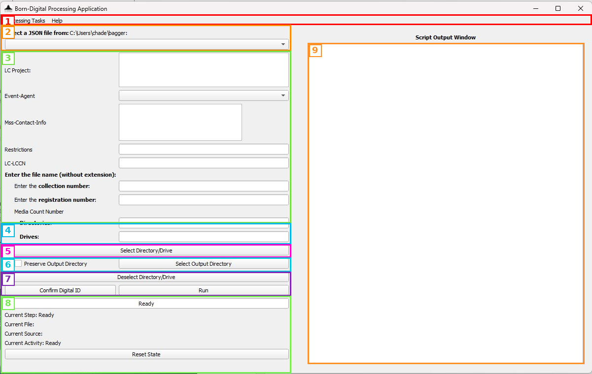
Preparing a Processing Job
Menu Options
- Processing Tasks
- Directory Listing: creates text files of directory listings for each drive or directory.
- Scan for limited file extensions (compressed files, email files, multimedia files (
.voband.cda), Apple patterns (.DS_Store,._, and.AppleDouble)): creates a spreadsheet providing the file name, location, and number of each extension found. - Create Bag (Bags drives and directories): checking this option will cause the application to bag the selected drive and/or directory.
- Byte Count
- File Format > Output Selection > Excel Output and/or HTML Output and/or PDF Output
- File Format > Signature update
- Help
- User Guide
- Report Bug or Suggestion
- About
In the Processing Tasks menu, click on the boxes next to the processing tasks you want to use. The File Format submenu expands to allow you to select the output format and to update the file signature definitions.
The Help menu provides access to an HTML version of this user guide, the Report Bug or Suggestion form, and the About window. The About window provides basic information about the application, including its version, build number, and build date.
Select Report Bug or Suggestion from the Help menu to open the bug and suggestion submission window shown in Figure 2.
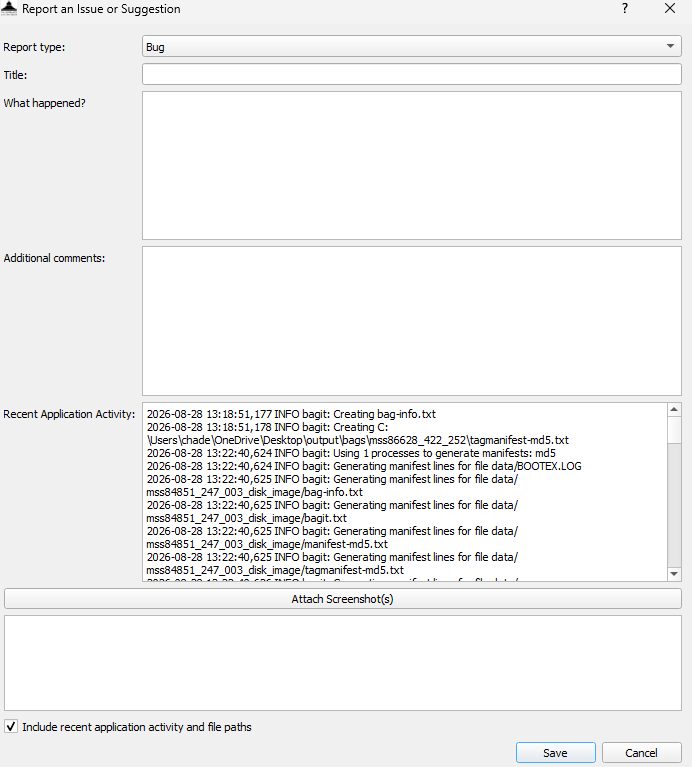
The Report Type field allows you to identify the submission as a bug, suggestion, or other issue. Enter a title and provide information in the What Happened? and Additional Comments fields. Screenshots can also be attached using the Attach Screenshot(s) button.
When the report is saved, the application includes a 200-line excerpt from the application log and packages the report, attached screenshots, and log excerpt into a ZIP file at the selected save location.
Selecting a Bagger Profile
The Bagger Profile pull-down menu displays the LC-Project value from each available Bagger profile. After a profile is selected, the application automatically populates the LC Project, MSS-Contact-Info, Restrictions, LC-LCCN, and Collection Number fields. If the selected profile contains multiple Event-Agent values, the Event-Agent field becomes a pull-down menu to select the person processing the born-digital material.
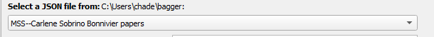
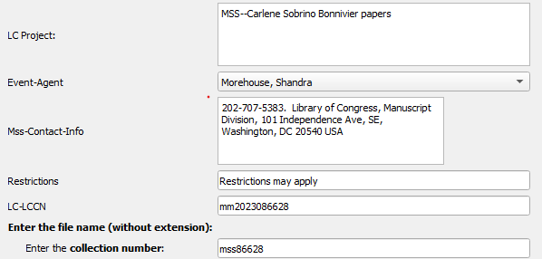
Entering Media Information
Enter the registration number assigned by the born-digital accessioner in the Registration Number field.
Enter the media number associated with each drive or directory. The application combines the collection ID, registration number, and media number to create the Digital ID.
Multiple media count numbers can be entered at the same time. Enter each number followed by a space. The application will generate the complete Digital ID (Collection Number + Registration number + Sequential media number) for each media count number and display the resulting IDs in the Script Output Window.
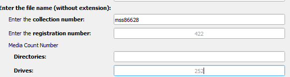
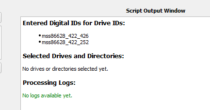
Selecting a Drive or Directory
Click Select Directory/Drive to open File Explorer. Navigate to and select the drive or directory containing the born-digital material to be processed.
Drives and directories are matched to Digital IDs in the order they are selected. The first selected drive or directory is associated with the first Digital ID entered, the second selection is associated with the second Digital ID, and so on.
After each selection, verify that the correct drive or directory is associated with the intended Digital ID before continuing.
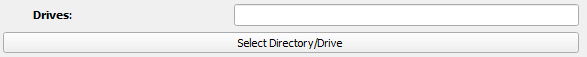
Selecting an Output Directory
Click Select Output Directory to open File Explorer. Navigate to and select the directory where reports and BagIt bags created during processing will be saved.
Select Preserve Output Directory to retain the selected output directory when the application is reset. If this option is not selected, the output directory will be cleared when the application is reset.
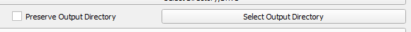
Confirming Digital ID Pairings
Before processing can begin, the selected drives and directories must be confirmed with their associated Digital IDs. Click Confirm Digital ID to confirm the pairings.
After confirmation, the pairings are displayed in the Script Output Window. Review the displayed information and verify that each drive or directory is associated with the correct Digital ID before proceeding.
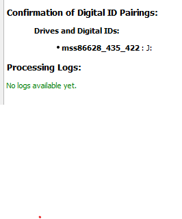
Correcting an Incorrect Pairing
If a drive, directory, or Digital ID was selected incorrectly, click Deselect Directory/Drive. The Deselect Drives, Directories, or Digital IDs window will open.
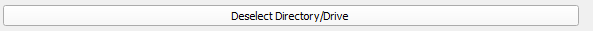
To remove a Digital ID, select the checkbox next to the ID and click OK. To remove both a selected drive or directory and its associated Digital ID, select the checkbox for each item and click OK.
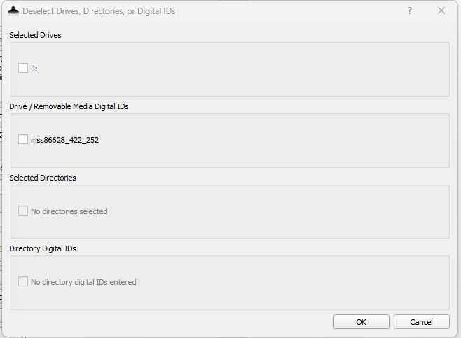
Drives, directories, and Digital IDs can also be removed individually. After the selections are removed, the Script Output Window updates to display the remaining Digital IDs and drive/directory selections.
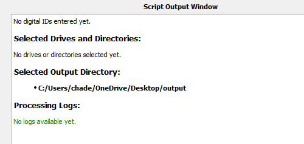
If necessary, enter or select the corrected information and confirm the Digital ID pairings again before processing. Do not begin processing until all Digital ID pairings have been verified.
Executing the Processing Tasks
Once the Digital IDs and selected drives or directories have been reviewed and confirmed, processing can begin. Click Run, located next to the Confirm Digital ID button, to start the selected processing tasks.
During processing, the application provides two areas for monitoring activity: Processing Status and the Script Output Window. Processing Status provides information about the task currently being performed, while the Script Output Window provides more detailed information about processing activity and results.
Processing Status
The Processing Status area displays the progress of the current operation. It shows the current processing step, file, source location, and activity. The progress bar provides additional information about the progress of the current task.
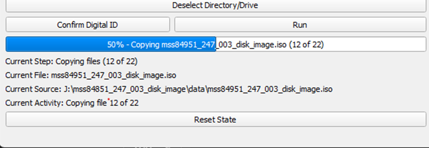
Script Output Window
The Script Output Window provides detailed information about processing activity and results. It displays when processing tasks start and finish, processing results and status messages, byte-count comparison results, and paths to reports and other outputs created by the application.
Report and output paths are displayed as clickable links. Select a link to open the corresponding file or location.
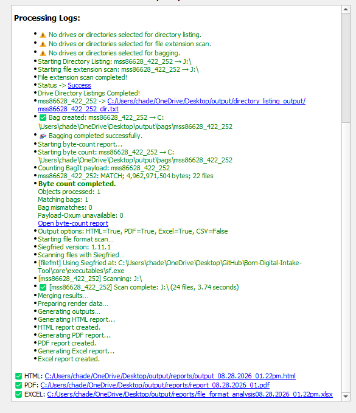
Output Reports and Files
When processing tasks are run, the application creates up to four directories for storing generated files: bags, directory_listing_output, reports, and temp_files. The following sections describe the files created by each processing task and where those files are stored.
Directory Listing
A separate text file is created for each selected drive or directory using the following Command Prompt command:
This is the standard command used by the Manuscript Division to create directory listings for born-digital material.
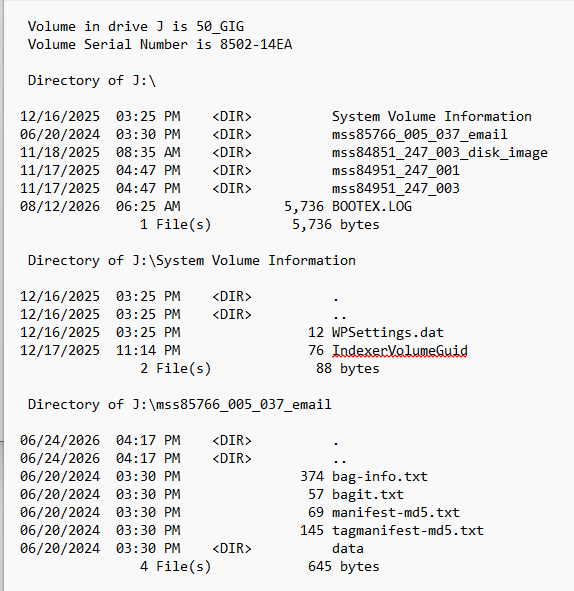
The resulting directory listing provides file and directory names, file sizes in bytes, the number of files in each directory, and, when scanning a drive, basic information about the drive.
Scan for limited file extensions
The limited file extension scan creates an Excel spreadsheet containing a minimum of two worksheets: a Summary worksheet and a separate worksheet for each selected drive or directory scanned.
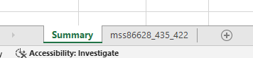
Within the Summary worksheet, each file extension is associated with the Digital ID where the files were located and the number of files found. The Digital ID and file extension are hyperlinked to more detailed information in the corresponding worksheets. In this example, there is only one Digital ID, so both hyperlinks lead to locations within the same worksheet.
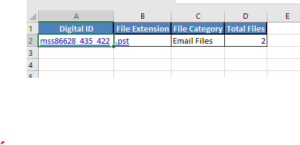
Clicking a Digital ID opens the worksheet for that Digital ID. Clicking a file extension takes you to the first instance of that file extension in the worksheet associated with the Digital ID shown to its left.
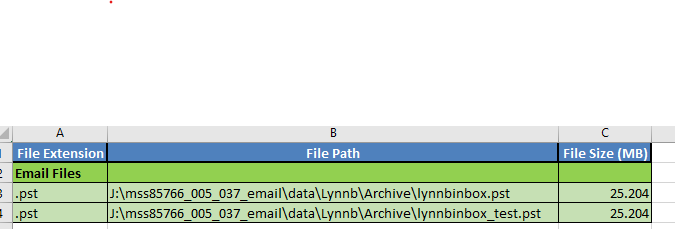
Brunhilde File Format Scan
The Brunhilde file format scan can generate reports in PDF, HTML, and Excel formats. Each report contains the same basic information but presents it in a different format. This section focuses on the Excel report. The Excel file format report contains a minimum of three worksheets: Scan_Summary, Complete File Listing, and one worksheet for each selected drive or directory processed.
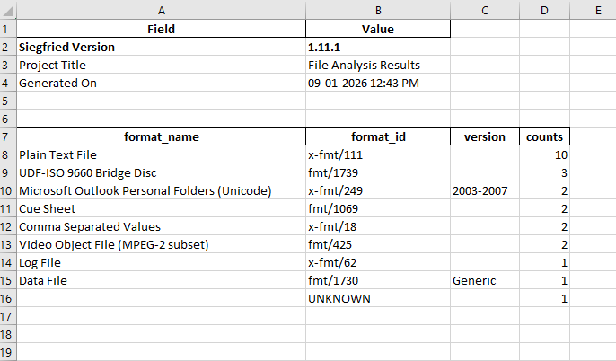
The top table provides information about the scan, including the Siegfried version and the date and time of the scan. The lower table provides a summary of the identified file formats, including the format name, PRONOM ID, version (when applicable), and the number of files identified for each format.
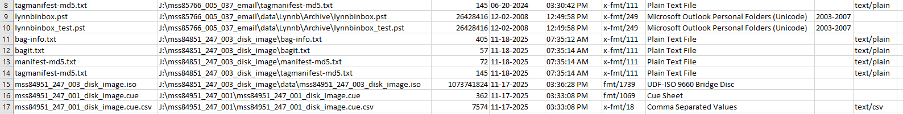
From left to right, the information includes the file name, full file path, file size in bytes, modification date and time, format/PRONOM ID, format name, format version, and MIME type.
Byte Count Report
The Byte Count Report is an Excel workbook composed of three worksheets: Summary, Directory Totals, and File Details. The Summary worksheet compares the calculated byte count and file count for each scanned bag with the Payload-Oxum value recorded in the bag's bag-info.txt file.
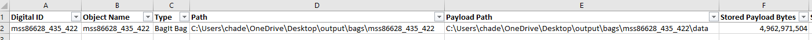
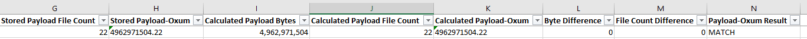
The Calculated Payload Bytes column contains the total number of payload bytes calculated by the application, while the Calculated Payload File Count column contains the number of payload files counted by the application. These values are combined in the Calculated Payload-Oxum column. The Stored Payload Bytes, Stored Payload File Count, and Stored Payload-Oxum columns contain values extracted from the Payload-Oxum field in the bag's bag-info.txt file.
The Byte Difference and File Count Difference columns show any differences between the stored and calculated values. The Payload-Oxum Result indicates whether the calculated values match the values recorded in the bag.
The Directory Totals worksheet provides the byte count for each directory in the selected media, along with the associated Digital ID and directory path.
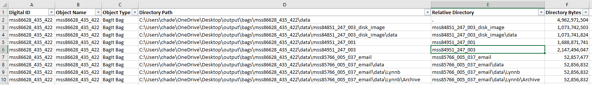
The File Details worksheet provides information about each file in the selected media, including the Digital ID, file name, file path, and file size in bytes.
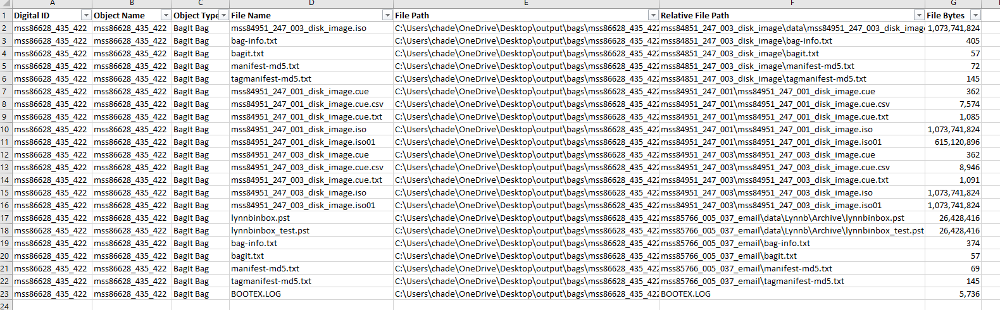